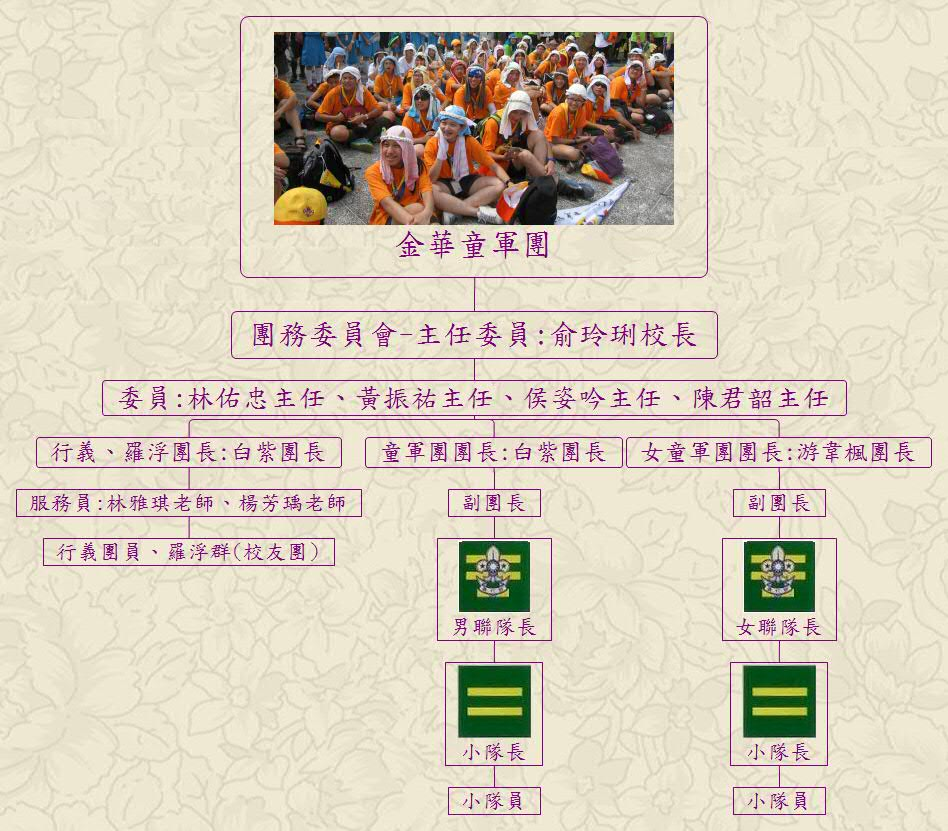

團務委員會主要負責管理團內重大事務，其主任委員由校長擔任，常任委員則由各處室主任擔任，接著分出三大團系，分別是：『行義、羅浮團』(或又稱校友團)團長由白紫老師擔任、『男童軍團』團長由白紫老師擔任、『女童軍團』團長則由游韋楓老師擔任。『行義、羅浮團』中有兩位服務員分別是林雅琪老師及楊芳瑀老師，『行義、羅浮團』的組成人員則是已畢業的校友，主要負責協助露營活動或課程，將知識、技能傳承下去。『男童軍團』、『女童軍團』中則還設有副團長，通常由實習的童軍老師擔任，下設聯隊長，由學生擔任，負責領導各小隊(附圖為聯隊長肩章)，小隊中還設有小隊長(附圖為小隊長肩章)帶領小隊員完成小隊任務。
以上圖片如有冒犯肖像權，請盡速聯絡本站，本站將會立即修正